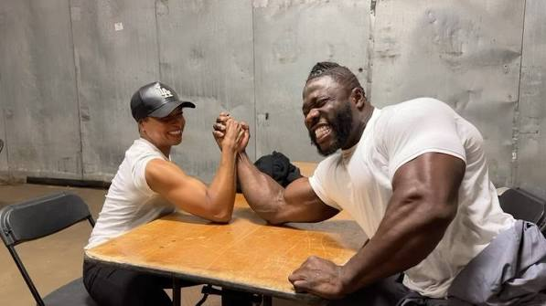

Käesurumine on spordiala, kus kaks vastast püüavad suruda teineteise kätt laua puutepadjale. Sellel spordialal on olulised jõud, tehnika ja vastupidavus.
Loe käesurumise kohta Vikipeediast (inglise keeles)

| Harjutus | Seeriad | Kordused |
|---|---|---|
| Randmepainutused | 3 | 12 |
| Lõuatõmbed | 4 | 8 |